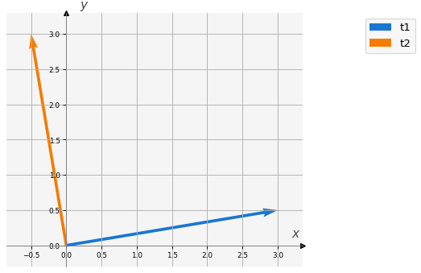
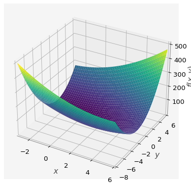
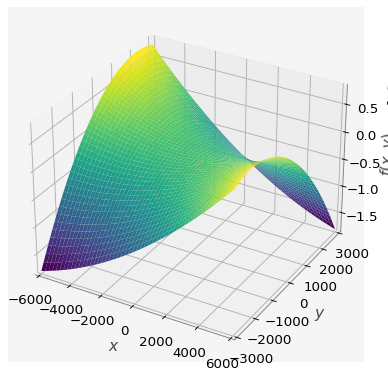
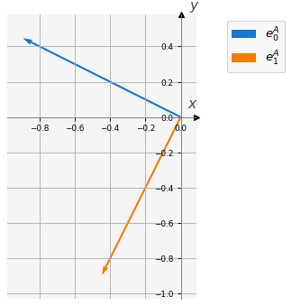
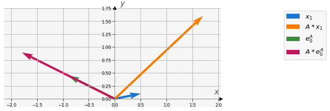

# Importamos las bibliotecas requeridas
import numpy as np
import sympy
import ipywidgets as widgets
import macti.visual as mvis
import macti.matem as mmat5 Matrices, normas y eigenvalores/eigenvectores.
Objetivo.
Revisar e ilustrar los conceptos de matrices, sus normas y eigenvalores/eigenvectores usando la biblioteca numpy.
MACTI-Algebra_Lineal_01 by Luis M. de la Cruz is licensed under Attribution-ShareAlike 4.0 International


Trabajo realizado con el apoyo del Programa UNAM-DGAPA-PAPIME PE101922
Sea \(A = a_{ij}\) una matriz de \(n \times n\), donde \(n\) indica la dimensión de la matriz (\(n\) renglones por \(n\) columnas). Los números \(a_{ij}\) son los elementos de la matriz, y \(i,j = 1,\dots,n\). La matriz \(A^T = {a_{ji}}\) es la matriz transpuesta.
\[ A = \left( \begin{array}{cccc} a_{11} & a_{12} & \dots & a_{1n}\\ a_{21} & a_{22} & \dots & a_{2n}\\ \vdots & \vdots& \ddots & \vdots \\ a_{n1} & a_{n2} & \dots & a_{nn}\\ \end{array} \right) \,\,\,\, A^T = \left( \begin{array}{cccc} a_{11} & a_{21} & \dots & a_{n1}\\ a_{12} & a_{22} & \dots & a_{n2}\\ \vdots & \vdots& \ddots & \vdots \\ a_{1n} & a_{2n} & \dots & a_{nn}\\ \end{array} \right) \]
Definamos una matriz usando numpy:
A = np.array([[2, 3, 5],
[1, -4, 8],
[8, 6, 3]])
Aarray([[ 2, 3, 5],
[ 1, -4, 8],
[ 8, 6, 3]])5.1 Matriz transpuesta
La matriz \(A^T = {a_{ji}}\) es la matriz transpuesta.
AT = A.T
ATarray([[ 2, 1, 8],
[ 3, -4, 6],
[ 5, 8, 3]])5.2 Matriz identidad
La matriz identidad \(I\) es aquella donde todas sus entradas son cero excepto en la diagonal donde sus entradas son 1.
I = np.eye(3)
Iarray([[1., 0., 0.],
[0., 1., 0.],
[0., 0., 1.]])5.3 Matriz inversa
La matriz inversa de \(A\) se denota por \(A^{-1}\) y es tal que \(A^{-1}A = I\).
Ainv = np.linalg.inv(A)
Ainvarray([[-0.23715415, 0.08300395, 0.17391304],
[ 0.24110672, -0.13438735, -0.04347826],
[ 0.15019763, 0.04743083, -0.04347826]])# Comprobar que Ainv es la inversa de A
np.dot(A, Ainv)array([[1.00000000e+00, 0.00000000e+00, 2.77555756e-17],
[2.22044605e-16, 1.00000000e+00, 0.00000000e+00],
[1.11022302e-16, 2.77555756e-17, 1.00000000e+00]])5.4 Matriz diagonal
Una matriz \(A = {a_{ij}}\) se llama diagonal si \(a_{ij}=0, \forall i \ne j\) y se denota por \(A = \mbox{diag}\) \({a_{ii}}\).
Aarray([[ 2, 3, 5],
[ 1, -4, 8],
[ 8, 6, 3]])np.diagonal(A)array([ 2, -4, 3])# Diagonales inferiores
np.diagonal(A,1)array([3, 8])# Diagonales superiores
np.diagonal(A,-1)array([1, 6])5.5 Matriz triangular superior e inferior
Una matriz \(A = {a_{ij}}\) se llama triangular superior si \(a_{ij} = 0, \forall i > j\) y triangular inferior si \(a_{ij} = 0, \forall i < j\).
# Matriz triangular superior
np.triu(A)array([[ 2, 3, 5],
[ 0, -4, 8],
[ 0, 0, 3]])# Matriz triangular inferior
np.tril(A)array([[ 2, 0, 0],
[ 1, -4, 0],
[ 8, 6, 3]])5.6 Matrices simétricas
Una matriz \(A\) es simétrica si \(A^T = A\) y antisimétrica si \(A^T = -A\).
B = np.array([[2, 3, 5],
[3, -4, 8],
[5, 8, 3]])print('Matriz A = \n{} \n\nMatriz B = \n{}'.format(A,B))Matriz A =
[[ 2 3 5]
[ 1 -4 8]
[ 8 6 3]]
Matriz B =
[[ 2 3 5]
[ 3 -4 8]
[ 5 8 3]]# Función para checar si una matriz es simétrica
isSymmetric = lambda mat: np.array_equal(mat, mat.T)isSymmetric(B)TrueisSymmetric(A)False5.7 Matriz ortogonal
Una matriz \(A\) es ortogonal si \(A^T A = I\), o equivalentemente \(A^T = A^{-1}\).
La matriz rotación en 2D es una matriz ortogonal y se define como sigue:
\[ R(\theta )= \begin{bmatrix} \cos \theta &-\sin \theta \\ \sin \theta & \cos \theta \\ \end{bmatrix} \]
theta = sympy.symbols('theta')
# Matriz rotación
R = sympy.Matrix([[sympy.cos(theta), -sympy.sin(theta)],
[sympy.sin(theta), sympy.cos(theta)]])
R\(\displaystyle \left[\begin{matrix}\cos{\left(\theta \right)} & - \sin{\left(\theta \right)}\\\sin{\left(\theta \right)} & \cos{\left(\theta \right)}\end{matrix}\right]\)
Verifiquemos que cumple con las propiedades de una matriz ortogonal.
R.T\(\displaystyle \left[\begin{matrix}\cos{\left(\theta \right)} & \sin{\left(\theta \right)}\\- \sin{\left(\theta \right)} & \cos{\left(\theta \right)}\end{matrix}\right]\)
R * R.T\(\displaystyle \left[\begin{matrix}\sin^{2}{\left(\theta \right)} + \cos^{2}{\left(\theta \right)} & 0\\0 & \sin^{2}{\left(\theta \right)} + \cos^{2}{\left(\theta \right)}\end{matrix}\right]\)
sympy.simplify(R * R.T)\(\displaystyle \left[\begin{matrix}1 & 0\\0 & 1\end{matrix}\right]\)
Esta matriz rota un vector por un cierto número de grados, veamos:
angulo = 90 # ángulo de rotación
# Vector a rotar
t1 = sympy.Matrix([3, 0.5])
# Rotación usando la matriz R
t2 = R.subs('theta', angulo * np.pi / 180).evalf(14) * t1
# Transformación a arreglos de numpy
nt1 = np.array(t1, dtype=float).reshape(2,)
nt2 = np.array(t2, dtype=float).reshape(2,)
# Visualizamos los vectores.
v = mvis.Plotter() # Definición de un objeto para crear figuras.
v.set_coordsys(1) # Definición del sistema de coordenadas.
v.plot_vectors(1, [nt1, nt2], ['t1', 't2'], ofx=-0.1) # Graficación de los vectores 'x' y 'y'.
v.grid() # Muestra la rejilla del sistema de coordenadas.
Cada par de renglones o de columnas de una matriz ortogonal, son ortogonales entre sí. Además la longitud de cada columna o renglón es igual a 1.
# Definimos una matriz ortogonal
C = np.array([[1/3, 2/3, -2/3],
[-2/3, 2/3, 1/3],
[2/3, 1/3, 2/3]])# Verificamos que es ortogonal
np.dot(C, C.T)array([[1., 0., 0.],
[0., 1., 0.],
[0., 0., 1.]])# Verificamos ortogonalidad entre renglones
np.dot(C[0], C[1])0.0# Verificamos ortogonalidad entre columnas
np.dot(C[:,0], C[:,1])0.0# Verificamos la norma de los renglones
np.linalg.norm(C[2])1.0# Verificamos la norma de las columnas
np.linalg.norm(C[2])1.05.8 Matriz transpuesta conjugada
La matriz \(A^*\) representa a la matriz \(A\) transpuesta y conjugada. La matriz \(A^* = {\bar{a}_{ji}}\) se llama también la adjunta de \(A\).
# Creación de una matriz con valores complejos
real = np.arange(1,10).reshape(3,3)
imag = np.arange(1,10).reshape(3,3)
C = real + imag *1.0j
Carray([[1.+1.j, 2.+2.j, 3.+3.j],
[4.+4.j, 5.+5.j, 6.+6.j],
[7.+7.j, 8.+8.j, 9.+9.j]])# Transpuesta conjugada
C.conj().Tarray([[1.-1.j, 4.-4.j, 7.-7.j],
[2.-2.j, 5.-5.j, 8.-8.j],
[3.-3.j, 6.-6.j, 9.-9.j]])5.9 Matriz definida positiva
Una matriz \(A\) se denomina positiva definida si \(\langle A\vec{x}, \vec{x}\rangle = \vec{x}^T A\vec{x} > 0\) para cualquier vector no nulo \(\vec{x}\) de \(\mathbb{R}^n\).
La matriz se llama positiva semidefinida si \(\vec{x}^T A\vec{x} \ge 0\) para cualquier vector \(\vec{x}\) de \(\mathbb{R}^n\).
Recordemos que: \[ \vec{x}^T A\vec{x} = \sum_{i=1}^n \sum_{j=1}^n a_{ij} x_i x_j \]
5.10 Ejemplo 1.
Las siguientes dos rectas se cruzan en algún punto.
\[ \begin{array}{ccc} 3x + 2y & = &2 \\ 2x + 6y & = &-8 \end{array} \]
En términos de un sistema lineal, las dos ecuaciones anteriores se escriben como sigue:
\[ \left[ \begin{array}{cc} 3 & 2 \\ 2 & 6 \end{array} \right] \left[ \begin{array}{c} x \\ y \end{array} \right] = \left[ \begin{array}{c} 2 \\ -8 \end{array} \right] \tag{1} \]
Podemos calcular \(\vec{x}^T A\vec{x}\) para este ejemplo como sigue:
# Usaremos sympy.
# Primero definimos los símbolos
x, y = sympy.symbols('x y')
# Construimos el vector de incógnitas
X = sympy.Matrix([x, y])
print(X)
# Construimos la matriz
A = sympy.Matrix([[3.0, 2.0], [2.0, 6.0]])
print(A)Matrix([[x], [y]])
Matrix([[3.00000000000000, 2.00000000000000], [2.00000000000000, 6.00000000000000]])# Calculamos xT * A * x
pos_def = X.T @ A @ X
pos_def\(\displaystyle \left[\begin{matrix}x \left(3.0 x + 2.0 y\right) + y \left(2.0 x + 6.0 y\right)\end{matrix}\right]\)
# Simplificamos
f = sympy.simplify(pos_def)
f\(\displaystyle \left[\begin{matrix}3.0 x^{2} + 4.0 x y + 6.0 y^{2}\end{matrix}\right]\)
# Graficamos
sympy.plotting.plot3d(f[0], (x, -3, 6), (y, -8, 6))
Observa que se obtiene una función cuadrática cuya gráfica es un paraboloide orientado hacia arriba. Esta es una característica de las matrices definidas positivas.
5.11 Ejercicio 1.
Determinar si en el siguiente sistema de ecuaciones se tiene una matriz definida positiva: \[ \begin{array}{ccc} y & = & 0.10 x + 200 \\ y & = & 0.30 x + 20 \end{array} \]
Sistema lineal.
\[ \left[ \begin{array}{cc} 0.10 & -1 \\ 0.30 & -1 \end{array} \right] \left[ \begin{array}{c} x \\ y \end{array} \right] = \left[ \begin{array}{c} -200 \\ -20 \end{array} \right] \tag{2} \]
Guarda tu respuesta en la variable respuesta = 'SI' si la matriz es definida positiva o respuesta = 'NO' en caso contrario.
Hint: Utilizar el mismo código del ejemplo 1 y modificarlo de acuerdo al ejercicio planteado. Observa cómo sale la gráfica y responde la pregunta. Para un mejor resultado, utiliza valores muy grandes y muy chicos en los rangos de \(x\) y \(y\) al momento de graficar ( > 2000).
# B = sympy.Matrix(...)
# pos_def_B = ...
# fB = ...
# sympy.plotting.plot3D( ...)
### BEGIN SOLUTION
B = sympy.Matrix([[0.10, -1.0], [0.30, -1.0]])
pos_indef_B = X.T @ B @ X
fB = sympy.simplify(pos_indef_B)
sympy.plotting.plot3d(fB[0], (x, -6000, 6000), (y, -3000, 3000))
### END SOLUTION
# respuesta = ...
5.12 Eigenvalores y Eigenvectores
Si \(A\) es una matriz cuadrada, entonces definimos el número \(\lambda\) (real o complejo) como autovalor (valor propio o eigenvalor) de \(A\) si \(A\vec{u} = \lambda \vec{u}\), o equivalentemente si \(det(A - \lambda I) = 0\). El vector \(\vec{u}\) se llama autovector (vector propio o eigenvector) de \(A\). El conjunto de todos los autovalores de la matriz \(A\) se denomina espectro de \(A\) y se denota como \(\rho(A)\).
# Convertimos la matriz A a un arreglo de numpy
A = np.array(A, dtype=float)
Aarray([[3., 2.],
[2., 6.]])Los eigenvalores y eigenvectores se pueden calcular usando la función np.linalg.eig()} de numpy como sigue:
np.linalg.eig(A) # w: eigenvalues, v: eigenvectorsEigResult(eigenvalues=array([2., 7.]), eigenvectors=array([[-0.89442719, -0.4472136 ],
[ 0.4472136 , -0.89442719]]))También podemos usar la función macti.matem.eigen_land() para obtener mayor información de los eigenvalores y eigenvectores como sigue:
wA, vA = mmat.eigen_land(A)eigenvalores = [2. 7.]
eigenvectores:
[-0.89442719 0.4472136 ]
[-0.4472136 -0.89442719]
ángulo entre eigenvectores = 90.0Podemos graficar los eigenvectores:
v = mvis.Plotter()
v.set_coordsys()
v.plot_vectors(1, [vA[:,0], vA[:,1]], ['$e_0^A$','$e_1^A$'])
v.grid()
Observa que en este caso los eigenvectores son ortogonales.
La relación
\[ A \vec{u} = \lambda \vec{u} \]
indica básicamente que al aplicar la matriz \(A\) a un eigenvector \(\vec{u}\), el resultado es el mismo vector escalado \(\lambda \vec{u}\), es decir no lo rota. Cualquier otro vector, que no sea un múltiplo de los eigenvectores, será rotado. Veamos esto en el siguiente código:
# definimos un vector
x1 = np.array([0.5,0.1])
# Aplicamos la matriz A
r1 = A @ x1
# Ahora graficamos
v = mvis.Plotter()
v.set_coordsys()
v.plot_vectors(1, [x1, r1, vA[:,0], A @ vA[:,0]],
['$x_1$', '$A * x_1$', '$e_0^A$', '$A * e_0^A$'])
v.grid()
Observamos que el eigenvectpr \(e_0^A\) no rota cuando se le aplica \(A\), pero el vector \(\vec{x}_1\) si es rotado un cierto ángulo cuando le aplicamos la matriz \(A\).
5.13 Normas Matriciales.
La norma de una matriz \(A\) es un número real positivo denotado por \(||A||\). Dadas cualesquiera dos matrices \(A\) y \(B\) se cumplen los siguiente axiomas. 1. \(||A|| \ge 0\). 2. \(||A|| = 0 \iff A = 0\). 3. \(||aA|| = |a| ||A||\) para cualquier número real \(a\). 4. \(||A+B|| \le ||A|| + ||B||\) (desigualdad triangular). 5. \(||AB|| \le ||A||||B||\) (compatibilidad).
Definimos la siguiente matriz
\[ M = \begin{bmatrix} -3 & 2 \\ 1 & -5 \end{bmatrix} \]
M = np.array([[-3, 2],[1, -5]])
Marray([[-3, 2],
[ 1, -5]])5.13.1 Norma 1.
Consiste en sumar los valores absolutos de los elementos de cada columna y luego calular la suma máxima: \[ ||A||_1 = \max_{1 \le j \le n} \left( \sum_{i=1}^n |a_{ij}| \right) \]
np.linalg.norm(M,1)7.05.13.2 Norma \(\infty\).
Consiste en sumar los valores absolutos de los elementos de cada renglón y luego calular la suma máxima: \[ ||A||_\infty = \max_{1 \le i \le n} \left( \sum_{j=1}^n |a_{ij}| \right) \]
np.linalg.norm(M, np.infty)6.05.13.3 Norma de Frobenius
\[ ||A||_F = \left( \sum_{i=1}^n \sum_{j=1}^n |a_{ij}|^2 \right)^{1/2} \]
np.linalg.norm(M, 'fro')6.2449979983983985.14 Ejemplo 2.
Verificar que se cumplen los 5 axiomas de las normas matriciales para la Norma 1 usando la matriz \(M\).
Propiedad 1. \(||M||_1 \geq 0\)
M_n1 = np.linalg.norm(M,1 )
print('M =\n {}'.format(M))
print('∥M∥₁ = {}'.format(M_n1))M =
[[-3 2]
[ 1 -5]]
∥M∥₁ = 7.0Propiedad 2.
ZERO = np.array([[0.0, 0.0], [0.0, 0.0]])
ZERO_n1 = np.linalg.norm(ZERO,1)
print('ZERO = \n{}'.format(ZERO))
print('∥ZERO∥₁ = {}'.format(ZERO_n1))ZERO =
[[0. 0.]
[0. 0.]]
∥ZERO∥₁ = 0.0Propiedad 3.
a = -3.5
a_M_n1 = np.linalg.norm(a * M, 1)
print('∥M∥₁ = {}, \t a = {}'.format(M_n1, a))
print('\n ∥a * M∥₁ = {} \n |a| * ∥M∥₁ = {}'.format(a_M_n1, np.abs(a) * M_n1))∥M∥₁ = 7.0, a = -3.5
∥a * M∥₁ = 24.5
|a| * ∥M∥₁ = 24.5Propiedad 4.
N = np.arange(4).reshape(2,2)
M_p_N_n1= np.linalg.norm(M + N, 1)
N_n1 = np.linalg.norm(N, 1)
print('\nNorma 1:')
print(' ∥M + N∥₁ = {}'.format(M_p_N_n1))
print(' ∥M∥₁ + ∥N∥₁ = {}'.format(M_n1 + N_n1))
print(' ¿ ∥M + N∥₁ ≤ ∥M∥₁ + ∥N∥₁ ? : {}'.format(M_p_N_n1 <= M_n1 + N_n1))
Norma 1:
∥M + N∥₁ = 6.0
∥M∥₁ + ∥N∥₁ = 11.0
¿ ∥M + N∥₁ ≤ ∥M∥₁ + ∥N∥₁ ? : TruePropiedad 5.
M_x_N_n1= np.linalg.norm(M * N, 1)
print('\nNorma 1:')
print(' ∥M * N∥₁ = {}'.format(M_x_N_n1))
print(' ∥M∥₁ * ∥N∥₁ = {}'.format(M_n1 * N_n1))
print(' ¿ ∥M * N∥₁ ≤ ∥M∥₁ * ∥N∥₁ ? : {}'.format(M_x_N_n1 <= M_n1 * N_n1))
Norma 1:
∥M * N∥₁ = 17.0
∥M∥₁ * ∥N∥₁ = 28.0
¿ ∥M * N∥₁ ≤ ∥M∥₁ * ∥N∥₁ ? : True5.15 Ejercicio 2.
Verificar se cumplen los axiomas de las normas para \(||\cdot||_F\) usando la matriz \(M\).
Propiedad 1.
El resultado debería ser:
M =
[[-3 2]
[ 1 -5]]
∥M∥F = 6.244997998398398### BEGIN SOLUTION
M_nF = np.linalg.norm(M,'fro')
print('M =\n {}'.format(M))
print('∥M∥F = {}'.format(M_nF))
### END SOLUTIONM =
[[-3 2]
[ 1 -5]]
∥M∥F = 6.244997998398398Propiedad 2.
El resultado debería ser:
ZERO =
[[0. 0.]
[0. 0.]]
∥ZERO∥F = 0.0### BEGIN SOLUTION
ZERO_nF = np.linalg.norm(ZERO,'fro')
print('ZERO = \n{}'.format(ZERO))
print('∥ZERO∥F = {}'.format(ZERO_nF))
### END SOLUTIONZERO =
[[0. 0.]
[0. 0.]]
∥ZERO∥F = 0.0Propiedad 3.
El resultado debería ser:
∥M∥F = 6.244997998398398, a = -3.5
∥a * M∥F = 21.857492994394395
|a| * ∥M∥F = 21.857492994394395### BEGIN SOLUTION
a = -3.5
a_M_nF = np.linalg.norm(a * M, 'fro')
print('∥M∥F = {}, \t a = {}'.format(M_nF, a))
print('\n ∥a * M∥F = {} \n |a| * ∥M∥F = {}'.format(a_M_nF, np.abs(a) * M_nF))
### END SOLUTION∥M∥F = 6.244997998398398, a = -3.5
∥a * M∥F = 21.857492994394395
|a| * ∥M∥F = 21.857492994394395Propiedad 4.
El resultado debería ser:
Norma de Frobenius:
∥M + N∥F = 5.5677643628300215
∥M∥F + ∥N∥F = 9.98665538517234
¿ ∥M + N∥F ≤ ∥M∥F + ∥N∥F ? : True### BEGIN SOLUTION
N = np.arange(4).reshape(2,2)
M_p_N_nF= np.linalg.norm(M + N, 'fro')
N_nF = np.linalg.norm(N, 'fro')
print('\nNorma de Frobenius:')
print(' ∥M + N∥F = {}'.format(M_p_N_nF))
print(' ∥M∥F + ∥N∥F = {}'.format(M_nF + N_nF))
print(' ¿ ∥M + N∥F ≤ ∥M∥F + ∥N∥F ? : {}'.format(M_p_N_nF <= M_nF + N_nF))
### END SOLUTION
Norma de Frobenius:
∥M + N∥F = 5.5677643628300215
∥M∥F + ∥N∥F = 9.98665538517234
¿ ∥M + N∥F ≤ ∥M∥F + ∥N∥F ? : TruePropiedad 5.
El resultado debería ser:
Norma de Frobenius:
∥M * N∥F = 15.264337522473747
∥M∥F * ∥N∥F = 23.366642891095847
¿ ∥M * N∥F ≤ ∥M∥F * ∥N∥F ? : True### BEGIN SOLUTION
M_x_N_nF= np.linalg.norm(M * N, 'fro')
print('\nNorma de Frobenius:')
print(' ∥M * N∥F = {}'.format(M_x_N_nF))
print(' ∥M∥F * ∥N∥F = {}'.format(M_nF * N_nF))
print(' ¿ ∥M * N∥F ≤ ∥M∥F * ∥N∥F ? : {}'.format(M_x_N_nF <= M_nF * N_nF))
### END SOLUTION
Norma de Frobenius:
∥M * N∥F = 15.264337522473747
∥M∥F * ∥N∥F = 23.366642891095847
¿ ∥M * N∥F ≤ ∥M∥F * ∥N∥F ? : True5.15.1 Número de condición
El número de condición de una matriz \(A\) se define como
\[ \kappa(A) = ||A|| \; ||A^{-1}|| \]
Este número siempre es más grande o igual a 1. Además nos da información acerca de que tan bien o mal está definido un problema que depende de la matriz en cuestión. Entre más grande sea este número es más difícil de resolver el problema.
A = np.array([[3., 2.],[2., 6.]])
print(A)
# Calculamos el número de condición usando funciones de numpy
kA_F = np.linalg.norm(A, 'fro') * np.linalg.norm(np.linalg.inv(A), 'fro')
print('𝜅(A) = {}'.format(kA_F))[[3. 2.]
[2. 6.]]
𝜅(A) = 3.7857142857142847# Existe una función para calcular el número de condición directamente
kA_F = np.linalg.cond(A, 'fro')
print('𝜅(A) = {}'.format(kA_F))𝜅(A) = 3.7857142857142847# Matriz con un número de condición más grande
B = np.array([[0.10, -1],[0.30, -1]])
kB_F = np.linalg.cond(B, 'fro')
print(B)
print('𝜅(B) = {}'.format(kB_F))[[ 0.1 -1. ]
[ 0.3 -1. ]]
𝜅(B) = 10.5# Matriz mal condicionada
C = np.array([[0.10, -1000],[0.30, -1]])
kC_F = np.linalg.cond(C, 'fro')
print(C)
print('𝜅(C) = {}'.format(kC_F))[[ 1.e-01 -1.e+03]
[ 3.e-01 -1.e+00]]
𝜅(C) = 3334.4484828276095.16 Ejercicio 3.
Calcula el número de condición para las matrices \(A\), \(B\) y \(C\) usando las normas 1 y 2. Utiliza la función print() de tal manera que obtengas una salida similar a la siguiente:
Número de condición con la norma 1:
𝜅(A) = ...
𝜅(B) = ...
𝜅(C) = ...
Número de condición con la norma 2:
𝜅(A) = ...
𝜅(B) = ...
𝜅(C) = ...# Con la norma 1
# kA_1 = ...
# ...
# print('Número ...)
# print('𝜅(A) = {}, ...)
# Con la norma 2
# ...
### BEGIN SOLUTION
# Usando la norma 1
kA_1 = np.linalg.cond(A, 1)
kB_1 = np.linalg.cond(B, 1)
kC_1 = np.linalg.cond(C, 1)
print('Número de condición con la norma 1:')
print(' 𝜅(A) = {} \n 𝜅(B) = {}\n 𝜅(C) = {}'.format(kA_1, kB_1, kC_1))
# Usando la norma 2
kA_2 = np.linalg.cond(A, 2)
kB_2 = np.linalg.cond(B, 2)
kC_2 = np.linalg.cond(C, 2)
print('Número de condición con la norma 2:')
print(' 𝜅(A) = {} \n 𝜅(B) = {}\n 𝜅(C) = {}'.format(kA_2, kB_2, kC_2))
### END SOLUTIONNúmero de condición con la norma 1:
𝜅(A) = 4.571428571428571
𝜅(B) = 13.0
𝜅(C) = 3338.113037679226
Número de condición con la norma 2:
𝜅(A) = 3.499999999999999
𝜅(B) = 10.40388203202208
𝜅(C) = 3334.4481829279107